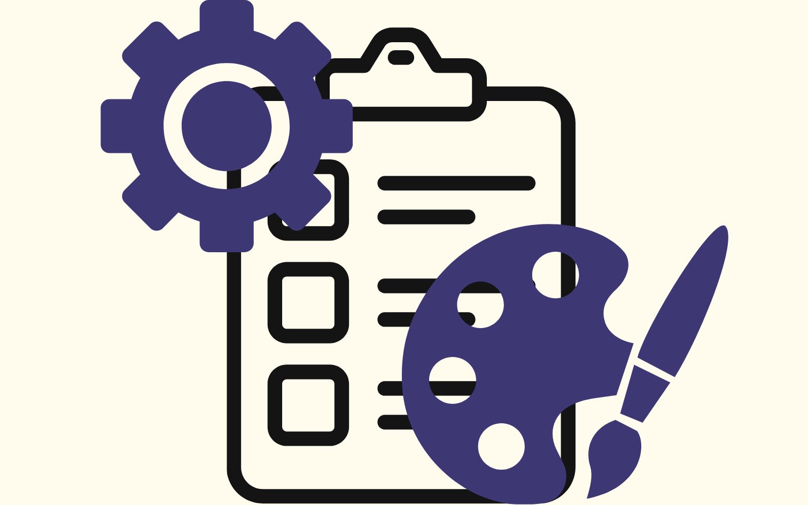

Projetos Personalizados
Transforme ideias em soluções, otimize processos e simplifique seu negócio.
> Projetos Personalizados
A FAKTORY desenvolve projetos digitais personalizados para empresas e profissionais que precisam de soluções específicas para suas atividades. Trabalhamos na criação de plataformas sob medida, sistemas exclusivos, ferramentas digitais e recursos que atendem a demandas que nem sempre podem ser resolvidas por soluções convencionais.
Cada projeto começa com a compreensão das necessidades e dos objetivos do cliente, permitindo identificar quais funcionalidades são necessárias e como elas podem ser aplicadas. A partir disso, planejamos e desenvolvemos uma solução que combina organização, funcionalidade e tecnologia, buscando atender às particularidades de cada negócio.
Por que investir em um projeto digital personalizado?
Cada empresa possui processos, necessidades e desafios diferentes. Por isso, nem sempre ferramentas prontas conseguem atender completamente às suas demandas. Uma solução personalizada permite desenvolver funcionalidades específicas, respeitando a maneira como o negócio funciona e os resultados que deseja alcançar.
Além de atender necessidades particulares, um sistema desenvolvido sob medida oferece maior flexibilidade para acompanhar mudanças e novas demandas. Dessa forma, a empresa pode contar com uma ferramenta pensada para sua realidade, evitando funcionalidades desnecessárias e limitações de soluções genéricas.
Como uma solução personalizada pode otimizar os processos da minha empresa?
Sistemas e ferramentas digitais podem simplificar tarefas que antes eram realizadas manualmente, centralizando informações e tornando determinadas atividades mais rápidas e organizadas. A automatização de processos também ajuda a reduzir trabalhos repetitivos, contribuindo para uma rotina mais eficiente.

Outra vantagem é a possibilidade de integrar diferentes funcionalidades em uma única plataforma, facilitando o gerenciamento das atividades e o acesso às informações. Com uma solução desenvolvida de acordo com suas necessidades, sua empresa ganha mais praticidade para organizar processos e concentrar esforços no crescimento do negócio.